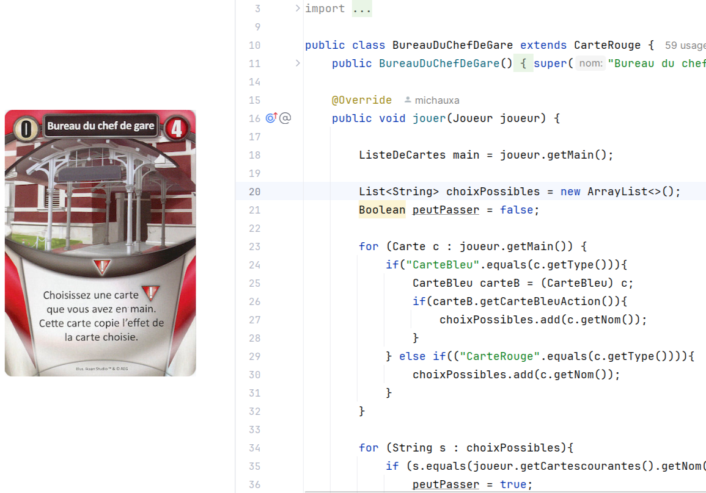
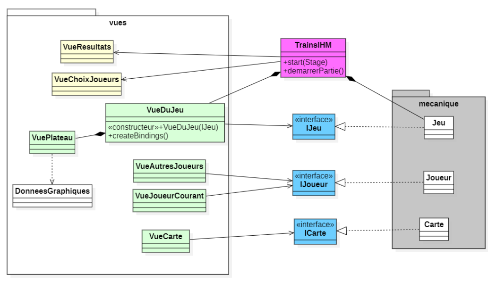
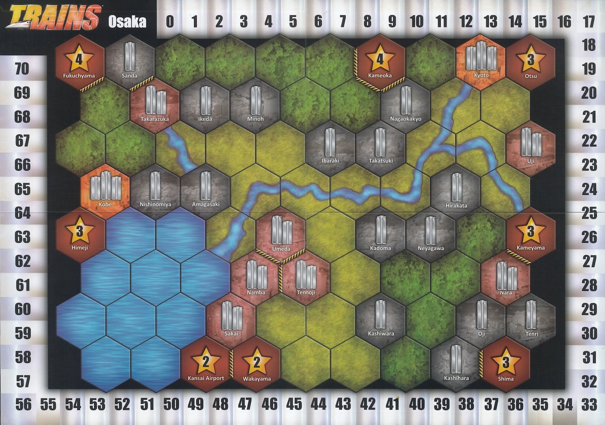

Projet "Trains"
Ce projet, réalisé dans le cadre de ma formation en BUT Informatique, avait pour objectif de coder le jeu japonais "Trains".
Ce jeu combine des éléments stratégiques et logiques, ce qui nous a conduits à une démarche de développement en trois phases
la mise en œuvre de la programmation orientée objet,
la création d’une interface utilisateur graphique,
et l’application de la théorie des graphes.
Réalisé en binôme, ce projet m’a permis de renforcer mes compétences techniques tout en développant ma capacité à collaborer efficacement.

Interface Homme Machine
 Théorie des graphes
